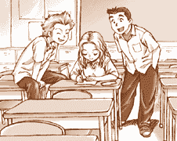
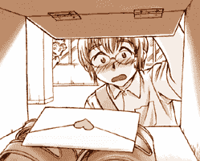
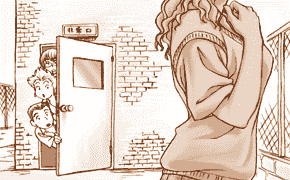
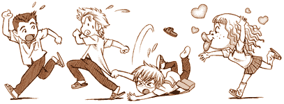

|
夏休みも近い、ある日の放課後。ホームルームも終わり、 １年５組の教室に残っている生徒は数えるほどしかいない。 そんな教室の片隅で、机に向かっているあゆみを 知佳志と大介のふたりがのぞきこんでいた。 「……ひとめ見たときから、アナタをスキになってしまいました。 ぜひ私とつきあってください。 ちなみに私のスリーサイズは上から８８、５９、８５……」 「ラブレターにスリーサイズなんて書かないよ、フツー」 大介のツッコミに、知佳志はムッとして言った。 「うるせーな、ダイスケ！ ……えーっと、あなたが大好きな女のコより」 あゆみは知佳志の言った言葉を、そのまま手元のビンセンに書いていく。 「……あなたが大好きな女のコより、と。 はい、書けたよー」  あゆみがさしだしたビンセンを見て、知佳志はニヤ～っと笑った。 「よしよし、ドコから見てもカンペキなラブレターだぜ！ コレでセッシュウのヤツ、ぜったいダマされるぞ」 「ねーねーちかしくん、なんだかせっしゅうくんがかわいそうじゃない？ ニセのラブレターでいたずらしようなんてさー」 「いまさらナニ言ってんだよアユミ！ オマエだっておもしろがって書いてたべ？」 「だってちかしくんとだいすけくんが『たのむ！』って言うんだもん。 そりゃーちょっとはおもしろそーかなーって思ったけどー」 知佳志はピンクの封筒にビンセンを入れて、封をした。 ごていねいにハートのシールも貼って、どこから見てもりっぱなラブレターだ。 それを大介に手渡す。 「ダイスケ、あしたの朝、この手紙をセッシュウのゲタ箱に入れとけよ。 ヒヒヒ……あしたが楽しみだぜ！」 ◆ ◆ ◆ ぱかっ。 朝、雪舟がいつもどおり自分のゲタ箱を開けると、見慣れないモノが入っていた。 ぱたん。 思わずそのままゲタ箱を閉める。 「…………」  勇気を出して、もう一度開けるとやっぱりあった。 うわばきの上に、カワイイ封筒がチョコンと。 あわててあたりを見まわしてから、ゲタ箱をのぞきこむ。 たっぷり１分は考えてから、雪舟はすばやくその封筒をカバンにしまいこんだ。 そしてまたキョロキョロして、真っ赤なカオで教室に向かった。 ◆ ◆ ◆ 「あのときのセッシュウのカオ！ 真っ赤になっててなんまらおかしかったぜ！」 １年５組の教室で、知佳志はあゆみにニセラブレターの成果を報告していた。 「もぉー、ちかしくんてばずっとかくれて見てたのー？ それで、いつせっしゅうくんにホントのこと言うの？」 「そーだなー……」 知佳志が考えこんでいると、柔道着をかかえた大介が教室に入ってきた。 「おっす！ わりー吉川、けさ朝練に遅れそうになってさ、 中山のゲタ箱にアレ入られなかったんだ。あしたにしよーぜ」 『……え？』 知佳志とあゆみの声がハモる。 「ナニいってんだよダイスケ。ラブレターなら、ちゃんとゲタバコに入ってたぜ」 「へ？ あのラブレターなら、まだおれが持ってるよ」 そういって大介が出したのは、ピンクの封筒。 あゆみが書いた宛名も、ハートマークのシールも、 たしかにきのうのニセラブレターだ。 「……と、いうことは……」 ３人は顔を見合わせる。 『あのラブレターは、ホンモノ!?』 突然、知佳志が走り出した。 「くそーーっ!! ゆるせねーー!! なしてセッシュウがオンナからラブレターもらうんよっ!?」 自分の席に座って魚類辞典をながめていた雪舟は、 スゴイ形相で近づいてくる知佳志に気づいて青ざめた。 「くぉらぁぁぁぁぁぁ、セッシュウ～～!!」 「うわっ!? ごっ、ごめんなさい!! ……って吉川くん、な、なんの用？」 雪舟は反射的に謝ってから、たずねる。 しかし知佳志は雪舟を無視していきなり雪舟のカバンをうばい、 中身を机の上にブチまけた。 雪舟のカバンからは、干潮表、釣り雑誌、携帯釣りゲーム、魚拓などが つぎつぎと飛び出す。 「ちょ……ちょっとやめてよ～！」 知佳志は雪舟の制止も聞かず、カバンの中をあさる。 遅れて大介とあゆみもやってきた。 「あった!!」 知佳志の手ににぎられていたのは、パンダの絵のついた淡いピンクの封筒。 すでに封は開けられていたので、そのままビンセンを取り出す。 ビンセンには、女のコらしい小さな文字が並んでいる。 「……もしよければ、つきあってください。 きょうの放課後、南校舎の屋上で待ってます……」 エンリョなく読み上げる知佳志に、雪舟はカオを赤くしたり青くしたり 動揺をかくせない。 「このオレをさしおいてラブレターもらうなんて、セッシュウのクセにナマイキだっ!!」 「そ……そんなこといわれても……く、くるし……」 知佳志にヘッドロックされて、雪舟はジタバタともがいた。 「ねー、せっしゅうくんにラブレター出したのって、だれなのー？」 あゆみの質問に、ラブレターをながめていた大介が答える。 「差出人の名前は書いてないみたいだな」 「したら、きょうの放課後、屋上に行ってみればわかるっしょ！ セッシュウにホレるオンナがいるなんて、イマイチ信じられねー」 知佳志の言葉に、あゆみは首をかしげて言った。 「そうかなー？ せっしゅうくんって、だまって立ってるだけならカッコイイし、 性格を知らなければ意外とモテるんじゃないのー？」 「し……白井さん……。さりげなくひどいこと言ってない……？」 半泣きの雪舟に、助け舟が入った。 「チャオ！ キミたち、そろそろホームルームが始まるよ。 席についてくれないかな？」 学級委員のアルフォンソに注意されて教室を見まわすと、 生徒のほとんどが席についていた。 「よーっし、放課後に南校舎屋上な！ その物好きなオンナのカオを見てやるぜ！」 そう言い残して、知佳志は自分の席に戻っていった。 「ど、どうしてぼくがこんな目に……」 雪舟のつぶやきと同時に、始業のチャイムが鳴った。 ◆ ◆ ◆ ……コーンカーンコーン……キーンコーン……。 終業のチャイムが鳴ると、知佳志が教室から飛び出した。 つづいて大介、最後に雪舟の順番で、廊下を走り階段をのぼる。 目的地はもちろん南校舎屋上。 「なぁ、中山のことが好きだなんて、どんな女のコだと思う？」 「イイオンナだったら、セッシュウのヤロウ、タダじゃすまさねー！」 「な……なんでそうなるの……？」 屋上へ出るドアの前に着くと、知佳志がちょっとだけ開けて、そっとのぞく。 「いた！オンナが待ってる！」 「どんなコ？」 大介もドアのすきまから屋上をのぞく。 「ぼ、ぼくにも見せてよ～！」 雪舟は必死になって背伸びして……そこで、ピタリと動きが止まった。  屋上で立っていたのは、１人の女子生徒。 超ミニのスカート、長い脚にはルーズソックス。 背はスラッと高く、髪にはメッシュが入っている。 こちらに背を向けているのでカオは見えない。 ……が、この場にいる３人には、ソレがだれなのかわかった。 パンダ市のスーパー高校生、金剛寺麗香。 大介が気の毒そうにつぶやいた。 「こ……金剛寺だったんだ……。中山に手紙出したのって……」 「セッシュウ、オマエついてるよな！ あのコンゴージに目ぇつけられるなんて！」 ニシシシ、と知佳志がいじわるそうに笑った。 フト、いままで青ざめていた雪舟が、あることに気づいてつぶやいた。 「で、でも……。 たしか金剛寺さんって、男ならだれでもよかったよね……」 ギクリ。 知佳志と大介の表情がこわばった。 たしかに、麗香がつぎからつぎへとオトコを変えるのは有名だった。 目についたオトコに乗り換えるのは、知佳志と大介も知っている。 ３人はゆるゆると顔を見合わせた。 『……見つからないうちに、逃げよう！』 ３人がうなずきあったとき、地響きのような声が聞こえた。 「あ～～!! チカシにダイスケにセッシュウじゃ～ん!! こんなトコでなにしてんのぉ～？」 さっきまでは背を向けていた麗香が、ドア横に立っている３人に気づいた。 「あ～、わかった～！ ３人とも、レイカに会いたくて探してたんでしょお～？ レイカ、ちょーうれしー！」 「やべえ、気づかれた!!」 「うわっ、こっち来たぞ！」 「に、逃げようよ！」 ３人は、一目散に逃げ出した。 「ウフッ！ 照れちゃって、ちょーかわいー！ 待ってぇ～！」 そして、屋上にはだれもいなくなった。……ワケではなかった。 麗香の圧倒的存在で知佳志たちは気がつかなかったが、 屋上のすみに、ひとりの女子生徒が立っていたのだった。 女子生徒は、ポツリとつぶやいた。 「おそいなぁ、中山くん……。手紙読んでくれたかなぁ……」 そのころ、麗香の魔の手から必死で逃げ回っていた雪舟が、 彼女の前に姿をあらわすことはなく、こうして雪舟の 『一生に一度のチャンス』はもろくも消えた。 彼らが『ダレがいちばん早くカノジョをつくれるか!?』という 競争を始めたのは、これから数日後のことだった。 おしまい  |
| ノベルに戻る |